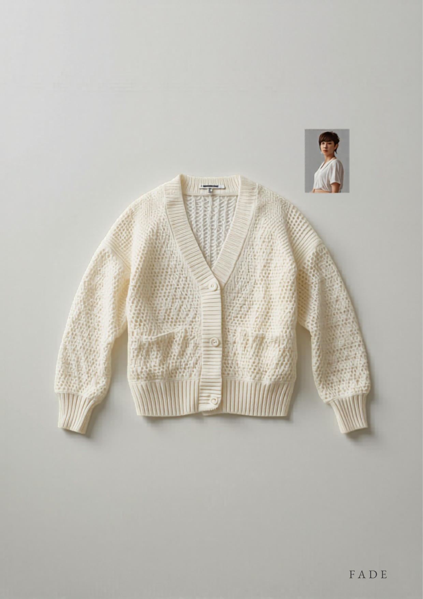

和
東和盛泰株式会社TOUWASEITAI CO., LTD.
PRODUCTION TECH PACK
工場用 製品仕様書
FACTORY / 製造用・全3葉 1/3
01
製品概要・基準写真
PRODUCT & REFERENCE PHOTO

▲ 基準現品写真（色：ホワイト）。本写真と360°図・寸法を相違なきこと（4釦・クロップ丈・パッチP2）。
| カテゴリ | 長袖カーディガン（Vネック開襟・リブ前立て4釦） |
|---|
| 対象 | レディース 30〜40代前半 |
|---|
| シルエット | クロップ（短め）丈・ドロップ肩のリラックス。羽織り〜1枚使い。前パッチポケット2。 |
|---|
| 編地 | 身頃・袖＝透かし編み（ポワント／移し目）全面／前立て・衿ぐり・裾・袖口＝1×1リブ。全成形。 |
|---|
| きかせ所 | 全面透かしの抜け感を端崩れさせず編む編成精度。軽量で春夏の羽織りに。「この繊細さを、この価格で」。 |
|---|
| 想定上代 | ¥3,900〜4,900（参考。確定はカウンターサンプル承認後） |
|---|
02
360°展開図（前・後・側）
360° TECHNICAL FLATS ・ FRONT / BACK / SIDE
※ クロップ（短め）丈・ドロップ肩・セットイン袖（前振りなし）。破線＝脇接ぎ位置。Vネック前立て1×1リブ・突合せ4釦・前パッチポケット2。透かし地は端崩れ防止のため肩・脇リンキング。
03
パーツ展開図（編立パネル）
PANEL DEVELOPMENT ・ KNIT PARTS
① 前身頃 左右
透かし編・成形
前立て突合せ・4釦
※ 全パーツ横編全成形。接ぎ＝肩・脇・袖下:リンキング（透かし地の端崩れ防止）／前立て・衿ぐり:1×1リブ連続編みリンキング付け。
和
東和盛泰株式会社TOUWASEITAI CO., LTD.
MEASUREMENT SPEC
寸法・POM
FACTORY / 製造用・全3葉 2/3
04
採寸ポイント図（POM）
POINTS OF MEASURE ・ 平置き
| 記号 | 採寸箇所 | 採寸方法 |
|---|
| A | 着丈 | HPS→裾端 |
| B | 身幅 | 脇下2.5cm下を直線 |
| C | 肩幅（ドロップ） | 肩先→肩先 |
| D | 袖丈 | 肩先→袖口端 |
| E | 袖幅 | アームホール下を直線 |
| F | 袖口幅 | 袖口リブ端 |
| G | アームホール | 肩先→脇下 直線 |
| H | 後衿ぐり幅 | 衿付け内寸 |
| I | 前V深さ | HPS水平線→V底 |
| J | 後衿ぐり深さ | HPS水平線→後衿底 |
| K | 前立て幅 | リブ band 幅 |
| M | 裾リブ高 | 裾端→リブ切替 |
| N | 袖口リブ高 | 袖口端→リブ切替 |
| O | 裾幅 | 裾端を直線 |
| P | ポケット | 口幅×丈／付け位置 |
05
寸法表・グレーディング
SIZE SPEC & GRADING ・ 単位 cm
| 記号 | 採寸箇所 | S | M | L | XL | XXL | 許容差± |
|---|
| A | 着丈（クロップ） | 54 | 56 | 58 | 60 | 62 | 1.5 |
|---|
| B | 身幅 | 48 | 51 | 54 | 57 | 60 | 2.0 |
|---|
| C | 肩幅（ドロップ） | 38 | 40 | 42 | 44 | 46 | 1.0 |
|---|
| D | 袖丈 | 56 | 57 | 58 | 59 | 60 | 1.5 |
|---|
| E | 袖幅 | 18 | 19 | 20 | 21 | 22 | 1.0 |
|---|
| F | 袖口幅 | 8.5 | 9.0 | 9.5 | 10.0 | 10.5 | 0.5 |
|---|
| G | アームホール | 20 | 21 | 22 | 23 | 24 | 1.0 |
|---|
| H | 後衿ぐり幅 | 18.0 | 18.5 | 19.0 | 19.5 | 20.0 | 0.7 |
|---|
| I | 前V深さ | 22 | 23 | 24 | 25 | 26 | 1.0 |
|---|
| J | 後衿ぐり深さ | 2.0 | 2.0 | 2.5 | 2.5 | 3.0 | 0.5 |
|---|
| K | 前立て幅 | 2.5 | 2.5 | 2.5 | 2.5 | 2.5 | 0.3 |
|---|
| M | 裾リブ高 | 3.0 | 3.0 | 3.0 | 3.0 | 3.0 | 0.5 |
|---|
| N | 袖口リブ高 | 3.0 | 3.0 | 3.0 | 3.0 | 3.0 | 0.5 |
|---|
| O | 裾幅 | 48 | 51 | 54 | 57 | 60 | 2.0 |
|---|
| P | ポケット(口幅×丈) | 11 × 11（左右対称・裾リブ上6cm・脇から4cm） | 0.5 |
|---|
※ クロップ丈に修正（現品写真準拠）。平置き・自然状態（透かし地・リブを伸ばさない）。グレーディングは身幅+3 / 肩+2 / 着丈+2 を基本ピッチ。基準＝M。
06
編密度・度目指示
KNITTING DENSITY
| ゲージ | 14–16GG 横編（全成形） | 基準度目 | 10cm角の目数・段数はカウンターサンプル時に実測・記録し量産固定 |
|---|
| 透かし | 移し目（ポワント）柄。柄リピートを身頃左右対称に配置 | 前立て・衿 | 1×1リブ・身頃より度目詰め（伸び止め） |
|---|
07
カラー展開・色番
COLORWAY
| No. | カラー名 | 色番 | PANTONE TPX | 釦色 | 備考 |
|---|
| 1 | イノセントホワイト | WHT | 11-0601 | 共色 | 定番（現品基準） |
| 2 | ミントグリーン | MNT | 13-6007 | 共色 | S/Sの抜け色 |
| 3 | グレージュ | GBG | 14-1108 | 共色 | 大人世代の定番 |
※ 既存「工業仕様図A」とカラー統一（ホワイト／ミント／グレージュ）。確定はラボディップ承認による。釦は各色とも本体共色のくるみ釦。
和
東和盛泰株式会社TOUWASEITAI CO., LTD.
CONSTRUCTION & QC
素材・縫製・検品
FACTORY / 製造用・全3葉 3/3
08
素材・付属（BOM）
BILL OF MATERIALS
| 本体糸 | アクリル70% / ナイロン30%（軽量・抗ピリング・シアー向き） | 番手/本数 | 細番手（14–16GG適合）。詳細はサンプル時確定 |
|---|
| 釦 | 共布くるみ釦 φ13mm × 4個（＋予備1個） | 縫製糸 | ウーリーナイロン（リンキング）／本体色合わせ |
|---|
| 織ネーム | 後ろ衿中央・縦型 | 品質表示 | 左脇縫い代・裾上10cm／組成・原産国・洗濯絵表示 |
|---|
| 下げ札 | 主札＋品番札（右袖・ガンタッカ） | 個包装 | OPP袋＋台紙／予備釦添付 |
|---|
09
ディテール拡大・縫製指示
DETAIL CALLOUTS
V衿/前立て
衿ぐり〜前立て連続の1×1リブ。V底突合せ。前立て幅2.5cm・4釦。
透かし編
移し目（ポワント）の抜き目。柄リピートを左右対称配置。抜き目崩れ・引きつれ不可。
袖口/裾
1×1リブ・リブ高3.0cm（裾・袖口共通）。
パッチP
パッチポケット11×11cm・左右対称。口は1×1リブ。本体柄と目方向合わせ。
10
縫製・接ぎ仕様
CONSTRUCTION
| 肩接ぎ | リンキング（透かし地の端崩れ防止） | 脇・袖下 | リンキング（必要に応じ地縫い併用） |
|---|
| 袖付け | セットイン縫製（イセ少・左右対称） | 前立て・衿付け | 1×1リブ連続編みリンキング付け・伸び止め |
|---|
| 釦ホール | リンキングループ（右前） | 仕上げ | 透かし目を整えるソフト整形セット（圧縮不可） |
|---|
11
洗濯表示・梱包
CARE & PACKING
| 洗濯表示 | 手洗い（弱）／漂白不可／タンブラー乾燥不可／アイロン中温（あて布）／日陰の平干し ※ネット使用・透かし目の変形防止のため平干し厳守 |
|---|
| たたみ | 二つ折り（台紙入り） | 個包装 | OPP個包装・予備釦添付 |
|---|
12
検品基準・合否
QUALITY CONTROL
- 寸法：全POMを許容差内。基準M。左右対称・透かし柄の位置左右対称必須。
- 編立：抜き目（透かし）の崩れ・引きつれ・目飛び・穴あき不揃い・段差は不良。
- 抗ピリング：JIS L 1076（ICI法）3-4級以上を目標。
- 洗濯収縮：タテ・ヨコ ±3%以内。透かし目の変形なきこと。
- 染色堅牢度：摩擦・洗濯とも4級以上を目標（淡色の汚染注意）。
- 釦：取付強度10N以上・4個＋予備1。リンキングループのほつれなきこと。
- 付属・表示：織ネーム/品質表示の位置・内容を現品照合。検針通過。
- ※本仕様書は提案兼製造指示。寸法・度目・原価は参考値を含み、量産確定はカウンターサンプル承認後とする。